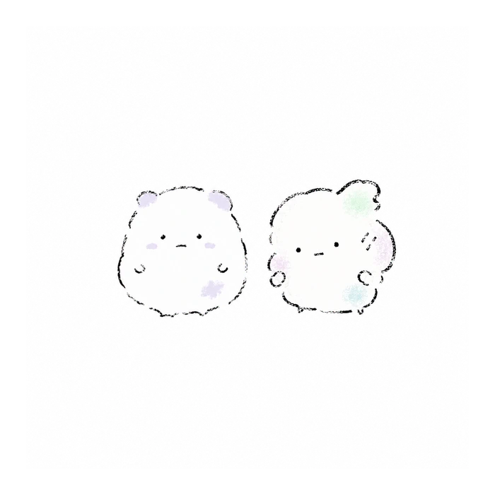

MOFU playground
MOFUであそぶ
診断で使っている16の景色を、画像生成でも楽しめるようにプロンプトをまとめました。診断結果の景色をそのまま楽しんでも、自分たち用に大きく変えてもOKです。
プロンプトのアレンジ歓迎。自由に書き換えて遊んでください。
16 landscapes
16の景色
結果の名前を開くと、プロンプトが表示されます。
01星をさがす入り江寄り道のときめき · Machiawase / Odoroki / Funade / Utatane
入り江の静かな海辺で、ふたりが小さな星や光る欠片を見つけて眺めている。夜に寄りすぎず、やさしく青い薄明かり。小さなボート、波、きらりと光る星、入り江のカーブした地形を入れる。発見のわくわくがあるが、空気は静かで親密。02珊瑚の宝さがし寄り道のときめき · Machiawase / Odoroki / Funade / Utage
海の中の珊瑚や宝物のようなモチーフに囲まれて、ふたりが「見つけたもの」を嬉しそうに共有している。静かな海中というより、少しにぎやかな海の広場。珊瑚、泡、宝箱のような小物、他者の気配を示す小さな飾りや旗を加える。明るく、楽しい発見の空気。03貝がらの寄り道寄り道のときめき · Machiawase / Odoroki / Funatsuki / Utatane
岸辺を歩きながら、ふたりが小さな貝がらを拾っている。海辺の散歩道、小径、持ち帰りたくなる小さな発見、控えめなきらめき。暮らしへつながるやさしい寄り道の感じ。足元に貝がら、細い道、静かな波打ち際。04縁日のよりみち寄り道のときめき · Machiawase / Odoroki / Funatsuki / Utage
港町の小さな縁日やマルシェのような通りで、ふたりが楽しそうに寄り道している。提灯や旗、屋台っぽいモチーフをごくミニマルに。にぎやかだけどごちゃつきすぎない。暮らしの岸辺に小さなお祭りが混ざる感じ。05水底の隠れ家帰る場所のぬくもり · Machiawase / Okaeri / Funade / Utatane
静かな海の底の隠れ家。ふたりが小さなこもれる場所で寄り添っている。海藻、やわらかな泡、隠れ家の窓、小さな灯り。色は落ち着いた青。新しさより、安心して戻ってくる場所の感じを大切に。06灯りのともる船着き場帰る場所のぬくもり · Machiawase / Okaeri / Funade / Utage
港の船着き場に小さな灯りがともっていて、ふたりがそこにいる。奥には小さな船や灯台、桟橋。「帰ってこられる場所」のぬくもりと、人の行き来の気配を感じる。静かなにぎわい。07夕凪の寄港地帰る場所のぬくもり · Machiawase / Okaeri / Funatsuki / Utatane
夕凪の港。風がやんで、穏やかな水面。ふたりが静かな寄港地でほっとしている。夕焼けではなく、やわらかな夕方の青み。暮らしへ戻る前の、静かなぬくもり。港、岸壁、落ち着いた波。08夕暮れマルシェ帰る場所のぬくもり · Machiawase / Okaeri / Funatsuki / Utage
夕暮れの港町マルシェ。ふたりが並んで歩き、灯りのつきはじめた屋台や小さな出店がある。暮らしの中の交流と、なじみの相手に会う安心感。あたたかい夕方の色味を少し加える。09ポケットの銀河毎日のきらめき · Mainichi / Odoroki / Funade / Utatane
日常の中にある小さな宇宙。ふたりのそばに、ポケットからこぼれるような星や銀河のモチーフ。小さく深い秘密の宇宙をふたりで覗き込んでいる。毎日そばにいるのに、まだ発見がある感じ。やさしく不思議。10泡のあそびば毎日のきらめき · Mainichi / Odoroki / Funade / Utage
ふたりの周りに、ぽこぽこと泡や遊びのモチーフが広がる。海の中の遊び場のような空気。毎日の中で次々遊びが生まれて、それが少しにぎやかに広がっていく。明るく、軽やかで、弾む感じ。11陽だまりの工作机毎日のきらめき · Mainichi / Odoroki / Funatsuki / Utatane
窓辺や机のある、やさしい作業スペース。ふたりが机の上や横で、小さな工作や創作をしている。紙、ペン、はさみ、貝がら、メモなど。陽だまり、日常、ひらめきを形にする感じ。12にぎやかな縁側毎日のきらめき · Mainichi / Odoroki / Funatsuki / Utage
縁側やオープンなデッキのような場所で、ふたりがわいわいした空気の中にいる。暮らしの延長に、交流と発見が自然に混ざる感じ。縁側、湯のみ、植物、出入りする空気、小さな広がり。13毛布のなかのやさしい海なじんだ手ざわり · Mainichi / Okaeri / Funade / Utatane
やわらかな毛布の中に、海のモチーフが静かに溶け込んでいる。ふたりが毛布にくるまれながら、やさしい海の中にいるような景色。最もぬくとく、安心感が強い。淡いブルー、毛布のしわ、やわらかな波。とても愛おしく、静か。14となりのプラネタリウムなじんだ手ざわり · Mainichi / Okaeri / Funade / Utage
ふたりが小さなプラネタリウムの中で、同じ星空を眺めている。毎日隣にいながら、深い世界を一緒に見上げていて、そこに少し人の集まる気配もある。星、ドーム、座席のニュアンス。静かな共有のにぎわい。15おかえりの窓辺なじんだ手ざわり · Mainichi / Okaeri / Funatsuki / Utatane
窓辺にふたりがいる。外にはやさしい海辺の町。暮らしに相手がなじんでいて、何でもない毎日にちゃんと居場所がある。カーテン、窓枠、ひだまり、小さな椅子やクッション。静かな「いつもの場所」。16灯りの集まるテラスなじんだ手ざわり · Mainichi / Okaeri / Funatsuki / Utage
暮らしの中のテラスに、小さな灯りが集まっている。ふたりが中心にいて、そこへ人の気配や交流のぬくもりがやわらかく広がる。夕方から夜の間のあたたかな灯り。開かれているけれど落ち着く、やさしい集まりの場所。Mofu mascot
もふマスコット
診断で使用したもふマスコットのキャラクターデザインプロンプトです。プロンプト内の を、描きたい対象に置き換えてください。
白い余白の中央に、小さな綿ぼこりのような動物マスコットを1匹描く。
頭と胴体の境目が曖昧な、ころんと丸いシルエット。
何の生き物かはっきりしすぎない。
短い手足、小さな丸い手、ほとんど見えない足。
顔は小さな点の目と、短い線だけの口。
頼りなさと虚無感がある。
少し太く、かすれて途切れる黒いペン線。
数分で描いた落書きのような、雑で素朴な手描き。
輪郭をすべて繋げず、描き残しや線の途切れを多くする。
線の本数は極端に少なく、陰影、立体感、細かな毛並みは描かない。
きれいに整えすぎず、左右非対称で不器用な形にする。
色はほぼ白、黒、ごく淡いパステルカラーのみ。
配色はをイメージし、落ち着き、静かな夜、やわらかな冷たさ、薄墨、青みのある空気、大人っぽさ、少し意地悪そうな静けさ を感じるものにする。
色名は固定せず、AIがその印象に合うごく淡い色を自然に選ぶ。
ただし、全体は寒色寄り〜無彩色寄りにし、白をたっぷり混ぜたような、薄くくすんだ色を優先する。
耳、頬、身体の一部に、ごく薄いクレヨンを数か所だけ雑に置くように着色する。
ベタ塗りや大きな色面ではなく、色はあくまで気配程度に薄く、白背景になじむ頼りない印象を保つ。
暖色メイン、鮮やかな色、強い黄味、派手な差し色は避ける。
広い白背景、文字なし、小物なし、影なし。
小さく描き、画面の大部分を余白にする。
かわいく作り込みすぎない。
商品用キャラクター、整ったデフォルメ、艶のある大きな瞳、丁寧な線画、アニメ塗り、ベクターイラストにはしない。
{kind=link}